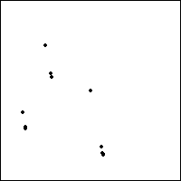

| What happens if we repeat the pattern |
| T3 followed by T1 followed by T2 |
| instead of |
| T1 followed by T2 followed by T3? |
| The first few points are shown on the left. Click the picture for an animation. The right
shows the limiting pattern. Does it look familiar? It should; it is the pattern
generated by repeating T1 followed by T2 followed by T3. |
|
 |
 |
 |
| Click to animate. |
|
|
|
| To understand why this is so, write the first several terms of
both sequences |
| 123123123123123123123123123123... |
| 312312312312312312312312312312... |
|
| The second sequence is just the first shifted two terms to the
left. The first sequence is the same as the second, but starting from
T2T1(0.5, 0.5) instead of from (0.5, 0.5).
As with the fractals generated by regular IFS, here the final pattern does not depend on the
starting point. We prefer to start with (0.5, 0.5) because this is the
most neutral choice. |
| Can you find an order of cycling through 1,2, and 3 that converges to
a different triple of points? Here is the answer. |